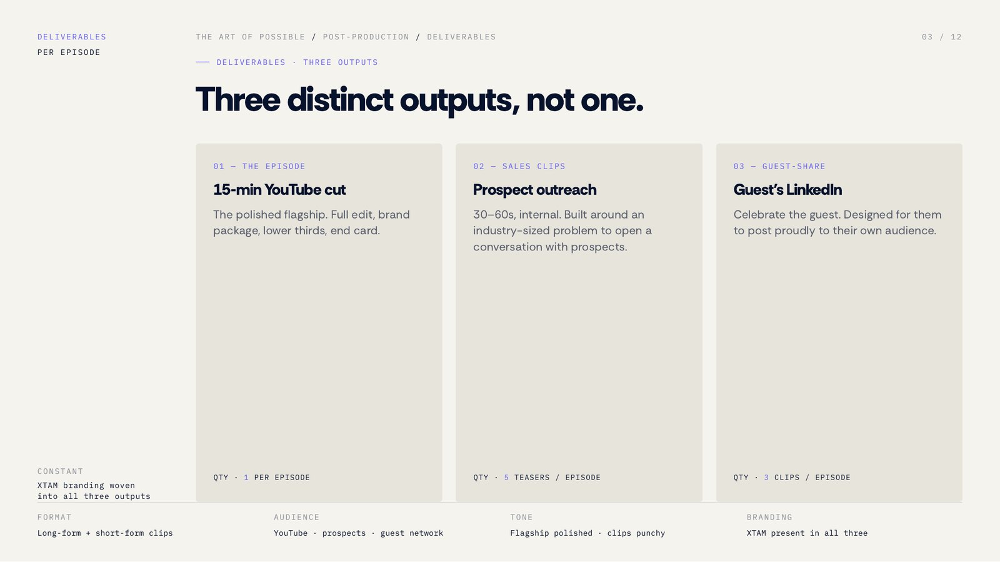
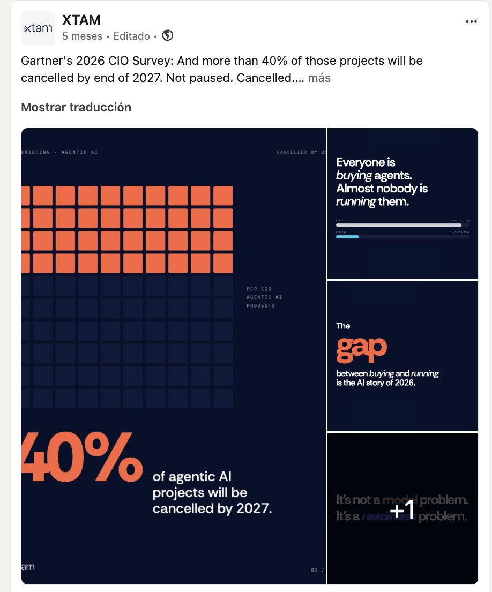

Influencia sin un brief de diseño
Es el caso más corto y el único que no es de diseño de producto. Está aquí porque muestra cómo trabajo cuando nadie me dice qué medir, y cómo construyo un argumento frente a las personas de más alto nivel de una empresa.
Descarté tres cuartas partes de mi propia segmentación
Segmenté en cuatro verticales (contratación pública, salud, software vertical y fintech) y las probé. Tres no respondieron. El outbound de gobierno se archivó formalmente el 19 de mayo con una razón diagnosticada: no había contenido específico del sector que llevar al mercado.
Así que gobierno volvió por el lado del contenido. Para julio, el newsletter de gobierno era el canal propio principal: 224 de 375 contactos. El primer intento falló, identifiqué por qué, y la vertical ganó en el segundo intento por otra ruta.
Una grabación, cuatro retornos
Los founders no querían invertir en un podcast. No lo defendí como construcción de marca, lo defendí por economía de producción. Una grabación rinde cuatro cosas: contenido, networking con los invitados, material para campañas y presencia digital. Lo formalicé como tres salidas distintas, no una: un corte de 15 minutos para YouTube, cinco teasers de venta para prospectos y tres clips para que el invitado publique en su propio perfil.
Se aprobó y se produjo: Art of Possible, con manual de marca, playbook de grabación, Episodio 1 y un sistema de reutilización de clips.


Reglas pequeñas con una razón
- Subtítulos quemados, siempre. La gente ve en mudo. Accesibilidad como punto de partida, no como casilla.
- El invitado aprueba el contenido antes de publicar. Cuesta velocidad y control editorial; compra un invitado tranquilo de compartir. Diseñar para una relación, no solo para un entregable.
- Un rate card que escribí yo. Definí el alcance de la postproducción, negocié con el proveedor y manejé el presupuesto.
- Una plantilla editorial para cada pieza: un número solo, el mecanismo detrás, lo que significa para el lector y un cierre que reencuadra, con la forma del gráfico escogida según el dato, como una cuadrícula de 100 cuadros para “40 de cada 100 proyectos”.

Hecho para funcionar sin mí
El handoff del 4 de septiembre mapeó cada carpeta, el estado de cada frente, los pendientes, las cadencias que había que mantener y el traspaso de herramientas. Seis cosas se habían archivado, cada una con su razón escrita. Y los tres cuellos de botella que no me tocaba resolver (una decisión de CRM aplazada, una dependencia de dominio y el costo abierto del podcast) quedaron planteados como decisiones y desbloqueos que la empresa necesitaba, no como tareas que yo debía.